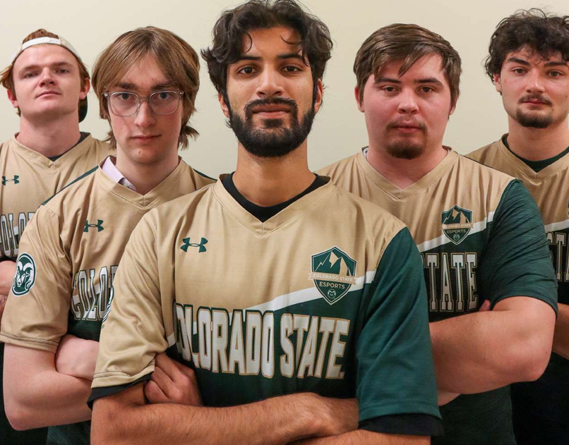

About CSU Counter-Strike 2
We are affiliated with the CSU Esports Club and are a competitive team formed by students at Colorado State University who play Counter-Strike 2. Our goal is to create a welcoming and challenging environment where we can represent CSU in national collegiate esports.
We participate in collegiate leagues, scrims, and tournaments throughout the academic semester. Our primary competitions include NACE (North American Collegiate Esports) and various open Faceit tournaments. When interest is high, we may also compete in ESEA Open or Collegiate divisions.
The team travels to at least one LAN event per semester—often a rivalry match against the University of Wyoming—and occasionally attends events in Denver. Internally, we host club events like game swaps, viewing parties, and casual in-person scrims. We're more than just teammates; we hang out, go to restaurants, and build friendships off the server as well.
If you're interested in competing, learning, and being part of a supportive gaming community, head over to the how to join page to learn more about tryouts and getting involved!
